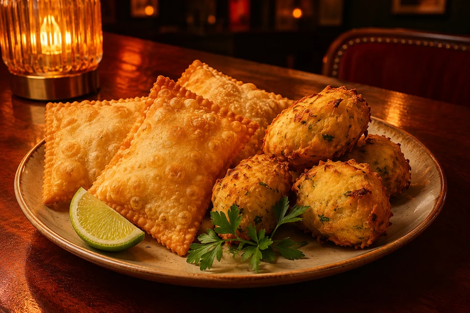
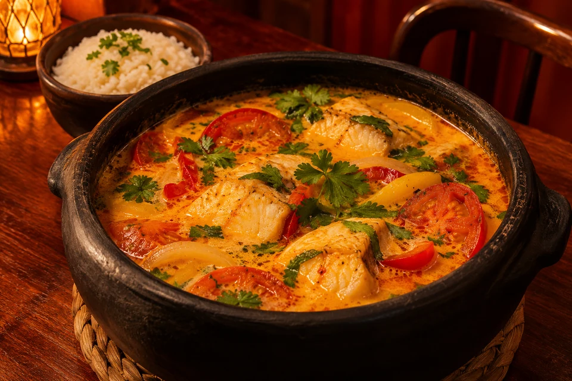
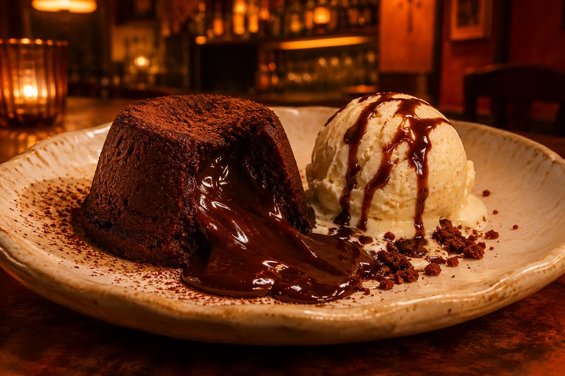

Dry Martini
Gin, vermute seco e azeitona.
R$ 40,00
Drinks, petiscos,
pratos e sobremesas
em cena na Lapa.
Gin, vermute seco e azeitona.
R$ 40,00Tequila, triple sec e limão.
R$ 38,00Vodka, limão, gengibre e espuma.
R$ 39,00Cachaça, limão e açúcar. Também com maracujá ou abacaxi.
R$ 36,00Aperol, espumante e soda.
R$ 42,00Gin, tônica premium e botânicos da estação.
R$ 40,00Vinho branco, frutas da época e toque cítrico.
R$ 38,00Whisky, mel, gengibre e limão.
R$ 44,00
Quatro unidades com costela desfiada e queijo coalho.
R$ 32,00Seis unidades. Crocante por fora, cremoso por dentro.
R$ 34,00Com maionese de ervas da casa.
R$ 28,00Com geleia de pimenta e limão.
R$ 32,00
Peixe fresco, leite de coco, dendê e arroz de ervas.
R$ 78,00Bife ancho grelhado, farofa de castanhas e vinagrete.
R$ 82,00Cremoso, com cogumelos frescos e parmesão.
R$ 68,00Nhoque artesanal, molho de sálvia e parmesão curado.
R$ 64,00
Bolo quente de chocolate com sorvete de baunilha.
R$ 34,00Cremoso, com calda de rapadura.
R$ 30,00Banana caramelizada, creme de canela e farofa crocante.
R$ 32,00Consulte os sabores do dia.
R$ 26,00Limão, manjericão, maçã verde e soda.
R$ 26,00Maracujá, mel, gengibre e água com gás.
R$ 26,00Frutas da estação e água com gás.
R$ 18,00Laranja, abacaxi ou limão.
R$ 14,00Escolha outra categoria para explorar o cardápio.